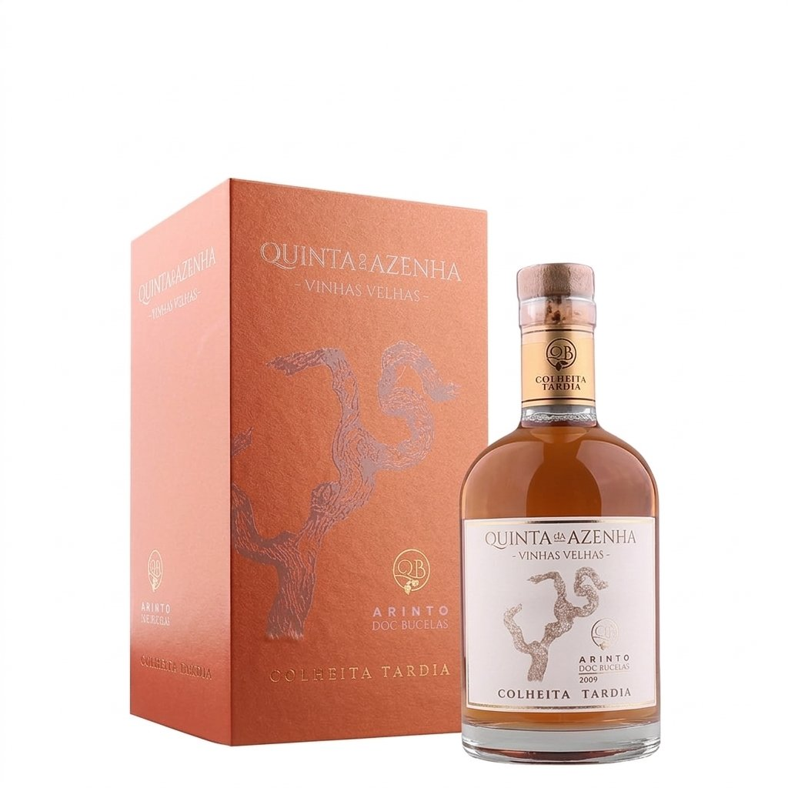
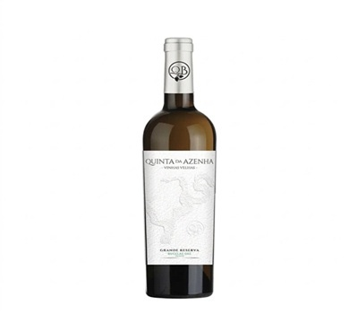
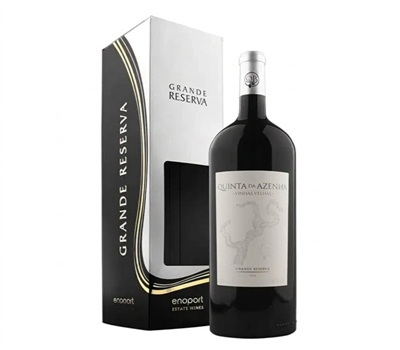
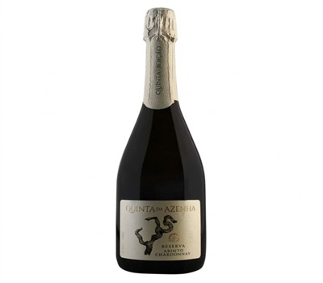
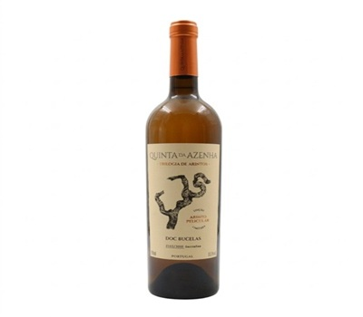

Vinho em Destaque

Colheita Tardia Vinhas Velhas
"Uma raridade que desafia o tempo - dez anos de paciência numa garrafa."
Nascido nas vinhas mais antigas da Quinta, este Arinto passou dez anos em barricas de carvalho francês. Cor âmbar profundo, aromas de frutos secos e mel. A acidez vibrante do Arinto equilibra a untuosidade - uma experiência que não se esquece.
Harmoniza com:
Arinto 100% · DOC Bucelas · 2009
Descobrir na QuintaA Nossa Gama

Grande Reserva Vinhas Velhas
Nascido nas vinhas mais velhas da Quinta. Estágio de 12 meses em barrica confere-lhe complexidade e longevidade raras.

Grande Reserva Magnum
Em formato Magnum, este tinto revela toda a sua grandeza. 12 meses em carvalho francês — para momentos que merecem ser lembrados.

Reserva Arinto-Chardonnay
A frescura do Arinto de Bucelas encontra a elegância do Chardonnay. Borbulhas finas, aroma cítrico e floral, final persistente.

Trilogia de Arintos — Pelicular
Edição numerada de 3000 garrafas. Maceração pelicular transforma o Arinto num branco âmbar, com textura e profundidade únicas.